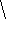
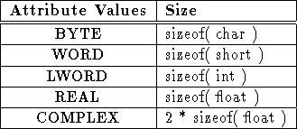
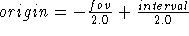

Next: Appendix: Changes Version 4.0
Up: User's Guide Software
Previous: References
The sdt file format actually consists of a file pair designated by the
extensions, ``.sdt'' and ``.spr''.
{
} xxxx
- .sdt
-
Contains the Signal DaTa
and consists of only raw binary data.
- .spr
-
Contains the Signal PaRameters
and consists of ASCII attribute:value pairs.
The ``.spr'' file has one ASCII parameter string per line
(i.e. newline 'n' terminated).
The parameters format consists first of a colon terminated attribute name,
followed by a newline terminated value.
There are three mandatory parameters:
{
} xxxxxxxxxx
- numDim
- The number of dimensions for the data.
- dim
- The number of data points in each dimension.
- dataType
- The data type. There are five data types supported
as given with their corresponding sizes in Table 13.

Table 13: Supported Values for the dataType Attribute.
A minimal ``.spr'' example:
numDim: 4
dim: 64 64 27 110
dataType: REAL
Optional parameters:
{
} xxxxxxxxxxxxx
- origin
- Position of the center of the first voxel.
One value for each dimension. If the origin is not specified,
but the fov is, then the image is assumed to be centered:

- fov
-
Field of view: The distance between the outside edges of the
first and last voxel along each dimension; one value for each dimension.
If the fov is not specified it is calculated according to:
fov = interval * dim
- interval
-
The center to center distance between adjacent voxels along
each dimension; one value for each dimension.
If the interval is not specified it is calculated according to:
interval = fov / dim
- displayRange
-
Two values giving the low_value and high_value.
Voxel values below the low_value will be displayed as black
and voxels with values above the high_value will be displayed
as white. Voxels with values within the display range are
displayed with a grey value that is scaled linearly between
the low_value and high_value.
A typical stimulate ``.spr'' example:
numDim: 4
dim: 128 128 20 150
origin: -10.000000 -10.000000 0.000000 0.000000
fov: 20.000000 20.000000 2.000000 15.000000
interval: 0.156250 0.156250 1.000000 1.000000
dataType: REAL
displayRange: 0.000000 347.904358
fidName: stimFid.sdt
sdtOrient: sag
Next: Appendix: Changes Version 4.0
Up: User's Guide Software
Previous: References